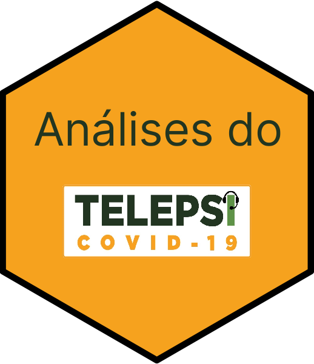

Análises de psicoeducação em vídeo para tratamento de queixas emocionais a partir de dados do projeto TelePSI
TelePSI trata-se de um projeto de pesquisa que ofereceu psicoterapia online, de modo gratuito, para todo o Brasil.
O projeto é fruto de uma parceria entre o Ministério da Saúde e o Hospital de Clínicas de Porto Alegre, e teve como objetivo:
- Assistir a profissionais da saúde do Sistema Único de Saúde (SUS) com sofrimento emocional no período de pandemia.
O presente repositório tem como meta armazenar as análises provenientes de um projeto aninhado que visa verificar a resposta de tratamento para depressão, ansiedade, irritabilidade e burnout através de psicoeducação por vídeo.
Instalação
O presente pacote pode ser instalado através da seguinte forma:
install.packages(remotes) # Caso não tenha o pacote remotes instalado
remotes::install_github("brunomontezano/TelePsi")Contato
Para contatar o responsável pelas análises apresentadas neste repositório em específico, enviar email para bmontezano@hcpa.edu.br